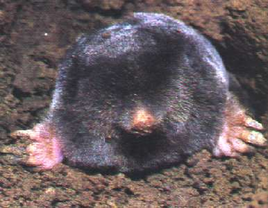

[Serment Taupin] [Serment Khâgneux] [Serment Agro]
Je
jure que désormais, partout et toujours,
La Taupe et les Taupins seront mes seules amours,
Que pour l'X mon âme brûlera d'une éternelle flamme
Et je veux de ma vie bannir toutes les femmes
Et les préceptes vains que les bourgeois proclament
Pour ne me consacrer qu'aux seules équations.
Je jure que la Taupe est ma seule nation
Et je mourrai plutôt que de voir asservir
Cette race d'élus que tout le monde admire.
Je jure que respecter tous les anciens
Et si la Taupe le veut mon sang sera le siens.
Je voue un éternel respect aux traditions
Et une sainte haine à l'administration!

Au
nom de la grande Khâgne et des Khâgneux je jure
D'honorer mes anciens d'accomplir des exploits
Pour élever mon âme au comble de la joie.
Qu'atrocement je meure si ce serment j'abjure.
Par
delà les zinzin et toutes les Bithures,
Par delà les chagrins et les vicieuses voies,
Je jure qu'en la Khâgne à jamais j'aurai foi
Et consacre ma vie à la littérature.
Par
Zeus contra HEC je brandirai l'éclair,
Par Eris contre Taupe j'épancherai ma colère,
Contre Véto, Agros je déchainerai les flots.
Car
la Khâgne est l'élite avant tout qui fleurit :
Les matins embumés par le faux et les mots,
Elle me donne le savoir et m'éveille à la vie.
Je
jure que l'Agro sera de toutes, la plus glorieuse section,
Puisse Gaïa me faire mener à bien cette grande mission,
Je jure de la vénérer toujours et à jamais,
Elle part qui toute la Nature vivante fut crée...
Puissent
les légendaires Esprits de la forêt m'enseigner
Les secrets ancestraux de chaque plante et de leurs effets
Je jure que pour toujours je les respecterai
Eux, possesseurs de savoir pour l'éternité.
Que
les éléments à moi s'allient
Typhons, tornades, de force infinie
Puisse la Terre se réveiller,
Ainsi que les enfers gronder,
Et l'Océan se déchainer
Pour montrer au monde entier
Notre supériorité.
Je
jure que par delà les monts et montagnes je répandrai
La grande fierté d'un Khâllot vert chèrement mérité.


© A Marlière 2002, réalisé avec DreamweaverMX et FireworksMX, optimisé pour une résolution 800*600